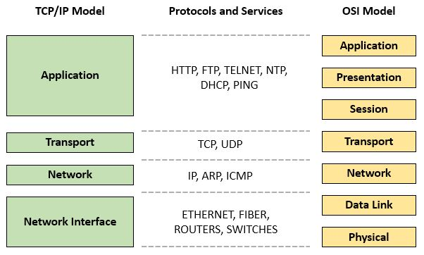

Definition:TCP/IP is the fundamental communication protocol suite that powers the entire internet.
TCP (Transmission Control Protocol) breaks your data into small packets, sends them across the network, and reassembles them in the correct order at the destination. It also checks for errors and requests missing packets to be resent.
IP (Internet Protocol) handles addressing and routing. Every device connected to the internet gets a unique IP address (like 192.168.1.1). IP makes sure each packet reaches the correct destination.
Think of IP as the postal service (delivering packages to the right address) and TCP as the mail sorter (making sure all pages of a letter arrive in order). Without TCP/IP, computers couldn't communicate with each other.